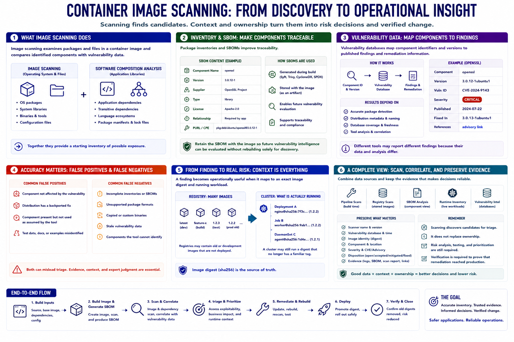

Finding Vulnerabilities in Container Images
Connecting to LMS... Progress: in progress

Narration
Image scanning examines packages and files in a container image and compares identified components with vulnerability data. Software composition analysis focuses on application libraries and transitive dependencies. Together they provide a starting inventory of possible exposure.
Package inventories and SBOMs improve traceability. An SBOM records component names, versions, suppliers, and relationships in a standard form. It can be generated during the build and retained with the image so future vulnerability intelligence can be evaluated without rebuilding solely for discovery.
Vulnerability databases map component identifiers and versions to published findings and remediation information. Results depend on accurate package detection, distribution metadata, naming, and database freshness. Different tools may report different findings because their data and analysis differ.
False positives occur when a scanner matches a component that is not affected, has a backported fix, or is present but not used as assumed. False negatives can result from incomplete inventories, unsupported package formats, copied binaries, stale data, or components that the tool cannot identify.
A finding becomes operationally useful when it maps to an exact image digest and running workload. Registries may contain old or development images that are not deployed, while a cluster may still run a digest that no longer has a familiar tag.
Combine pipeline scans, registry scans, SBOM analysis, and runtime inventory. Preserve scanner version, database time, image identity, disposition, and evidence. Scanning discovers candidates for triage; it does not replace ownership, risk analysis, testing, or verification that remediation reached production.